This vignette goes through everything a run of
vp_generate() finds, one result at a time, on the Mi Band 3
of Get started: the features that are in
every band or in none, the three graphs of strong relationships, the
atomic sets, the minimal form, the kernel and the two reports of the
run. Then it checks and explains the results, compares versions of a
model, and ends with the options of vp_generate(), formulas
made by other tools, and what happens when a model is wrong. Each result
is also a file, and the vignette shows the files too, because other
programs can read them.
library(variplex)
library(dplyr)
band <- vp_generate(
vp_example("miband3_realized.uvl"),
output_dir = "out",
or_graph = TRUE,
kernel = TRUE,
keep_dimacs = TRUE
)
show_file <- function(ending) {
writeLines(readLines(paste0("out/miband3_realized__", ending)))
}show_file() prints a file of the run; it is only a
shortcut for this vignette.
Core, dead and variable features
Before looking at pairs of features, vp_generate() sets
aside the 5 abstract features, which are not parts of a band, and looks
at each other feature alone. It sorts it into one of three kinds, one of
the classic analyses of feature models Benavides et al. (2010); Trinidad et al. (2008). Only the third kind
is a real choice, and only the third kind gets a question to the
solver:
| Kind of feature | Mi Band 3 | Is a question to the solver worth asking? |
|---|---|---|
| core: in every valid configuration | 8 | No. Supposing that it is selected changes nothing, because it always is. Every other feature “requires” it, which tells nothing about the choices you can make. |
| dead: in no valid configuration | 0 | No. It can never be selected, so “suppose it is selected” has no answer. A dead feature is almost always a mistake in the model (When something is wrong). |
| variable: in some valid configurations and not in others | 11 | Yes, one question each: “suppose this feature is selected: which features must then be selected too, and which can then not be selected at all?” |
One quick check of all the features at once tells the three kinds
apart before the expensive questions start. That is why the first run of
Get started said
Querying 11 variables: 24 features, of which 5 are
abstract, 8 are core and 0 are dead, leave 11 questions, and these 11
features are exactly the dots of the graphs. Two words of that message
need a gloss: variables are the variables of the logic
formula (in a formula translated from UVL each variable is one feature),
and (input filter) says that the variables not worth a
question were set aside before asking, which is the normal way to
work.
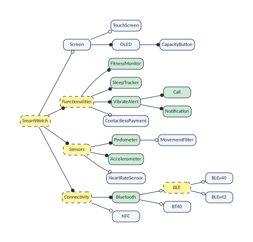
vp_features() gives every feature with its status; the
core features are also in the file __core.txt:
vp_features(band) |> count(status)
#> # A tibble: 2 x 2
#> status n
#> <chr> <int>
#> 1 core 8
#> 2 variable 11
show_file("core.txt")
#> 0 "FitnessMonitor"
#> 0 "SleepTracker"
#> 0 "VibrateAlert"
#> 0 "Call"
#> 0 "Notification"
#> 0 "Pedometer"
#> 0 "Accelerometer"
#> 0 "Bluetooth"They are no surprise: the concrete features that hang from the root through mandatory links only (the root and the headings on the way are abstract, so they are not listed). In the file, each line has a number and a name. The number is the position of the feature in the graphs, and it is 0 because core features are not drawn in the graphs: they are in every band, so every feature “requires” them, and drawing that would only add noise (Showing core features and abstract ones shows how to draw them anyway).
The file of dead features is empty, which is good news:
show_file("dead.txt")More than half of this model is not a choice at all, and variplex asks only about the rest. In a formula made by another tool it also skips the helper variables of the translation, and there the saving is large: the formula of Linux 3.13 has 23,838 variables, and variplex asks only 7,100 questions (Formulas made by other tools).
The requires graph: “if I take this, I also get that”
In R, the requires graph is a tibble with one row per arrow:
from requires to.
vp_links(band, "requires")
#> # A tibble: 21 x 2
#> from to
#> <chr> <chr>
#> 1 Screen OLED
#> 2 Screen CapacityButton
#> 3 TouchScreen Screen
#> 4 TouchScreen OLED
#> 5 TouchScreen CapacityButton
#> 6 OLED Screen
#> 7 OLED CapacityButton
#> 8 CapacityButton Screen
#> 9 CapacityButton OLED
#> 10 ContactlessPayment NFC
#> # i 11 more rowsThe file __requires.net holds the same graph, as
text:
show_file("requires.net")
#> *Vertices 11
#> 1 "Screen"
#> 2 "TouchScreen"
#> 3 "OLED"
#> 4 "CapacityButton"
#> 5 "ContactlessPayment"
#> 6 "MovementFilter"
#> 7 "HeartRateSensor"
#> 8 "BLEv40"
#> 9 "BLEv42"
#> 10 "BT40"
#> 11 "NFC"
#> *Arcs
#> 1 3
#> 1 4
#> 2 1
#> 2 3
#> 2 4
#> 3 1
#> 3 4
#> 4 1
#> 4 3
#> 5 11
#> 6 1
#> 6 3
#> 6 4
#> 6 8
#> 8 1
#> 8 3
#> 8 4
#> 9 1
#> 9 3
#> 9 4
#> 9 7It has two parts.
- After
*Vertices 11come the 11 features that can vary, numbered from 1. - After
*Arcscome the relationships, one per line, as two numbers. The line2 1means: feature 2 requires feature 1, that is, TouchScreen requires Screen.
This format is called Pajek, and programs for network analysis read it directly (Using the results in other programs). The figure is the same graph as a drawing.
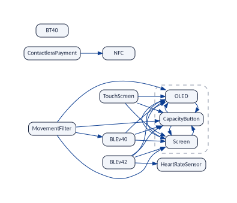
Why so many arrows?
The model has only a handful of constraints, yet the graph has 21 arrows. The reason is that the graph is complete: it holds every “requires” that is true, not only those that somebody wrote. Three examples:
- TouchScreen → Screen is written in the model: a child needs its parent.
- MovementFilter → Screen is written nowhere. It follows from a chain: the movement filter needs BLE version 4.0 (constraint 1), which is a kind of BLE, and a band with BLE does not use classic Bluetooth, so it has a screen (constraint 4).
- BLEv42 → HeartRateSensor is also written nowhere. A band with BLE version 4.2 has BLE, so it has a heart-rate sensor or a movement filter (constraint 2). But the movement filter needs version 4.0 (constraint 1), and a band has only one version. So it must be the heart-rate sensor.
You do not have to follow chains like these. That is the job of variplex. You read the answer: if the arrow is in the graph, the relationship holds in every valid band; if it is not, there is at least one valid band where it fails.
Try it
What do you get “for free” when you choose BLEv42?
vp_requirements(band, "BLEv42")
#> # A tibble: 4 x 1
#> feature
#> <chr>
#> 1 Screen
#> 2 OLED
#> 3 CapacityButton
#> 4 HeartRateSensorScreen, OLED, CapacityButton and HeartRateSensor (and BLE, an abstract feature, which the graphs leave out).
The excludes graph: “these two never go together”
vp_links(band, "excludes")
#> # A tibble: 10 x 2
#> from to
#> <chr> <chr>
#> 1 Screen BT40
#> 2 TouchScreen BT40
#> 3 OLED BT40
#> 4 CapacityButton BT40
#> 5 MovementFilter HeartRateSensor
#> 6 MovementFilter BLEv42
#> 7 MovementFilter BT40
#> 8 BLEv40 BLEv42
#> 9 BLEv40 BT40
#> 10 BLEv42 BT40The row MovementFilter, HeartRateSensor means that
the two are never in the same band. A conflict has no direction (if A
excludes B, then B excludes A), so each pair is listed once. In the file
__excludes.net the same features are followed by
*Edges, each pair written with the smaller number first; a
link without a direction is called an edge instead of
an arc:
show_file("excludes.net")
#> *Vertices 11
#> 1 "Screen"
#> 2 "TouchScreen"
#> 3 "OLED"
#> 4 "CapacityButton"
#> 5 "ContactlessPayment"
#> 6 "MovementFilter"
#> 7 "HeartRateSensor"
#> 8 "BLEv40"
#> 9 "BLEv42"
#> 10 "BT40"
#> 11 "NFC"
#> *Edges
#> 1 10
#> 2 10
#> 3 10
#> 4 10
#> 6 7
#> 6 9
#> 6 10
#> 8 9
#> 8 10
#> 9 10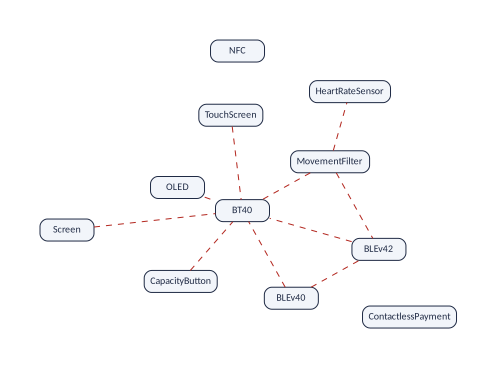
Again, most of these conflicts are consequences. The model says that BT40 bands have no screen (constraint 5). variplex adds that they cannot have a touch screen, an OLED panel, a capacity button, a movement filter or any version of BLE either, because each of those needs a screen, directly or through a chain.
HeartRateSensor, NFC and ContactlessPayment are in few or no conflicts. Features like these are easy to add to a band. We come back to this idea with the kernel (The kernel: “can these go together?”).
The at-least-one graph: “one of the two, at least”
The first two graphs say what happens when you take a
feature. A third graph says what happens when you leave one
out. It costs a second question per feature, so it is made only
when you ask for it, with or_graph = TRUE (as the run at
the top of this vignette did). An edge between A and B means: no
valid band lacks both.
vp_links(band, "atleastone")
#> # A tibble: 3 x 2
#> from to
#> <chr> <chr>
#> 1 Screen BT40
#> 2 OLED BT40
#> 3 CapacityButton BT40There are 3 such edges, all with BT40: a band has classic Bluetooth, or it has a screen (and with it the other features of its atomic set, Atomic sets).

Why BLEv40 and BLEv42 are not joined
In the model, BLEv40 and BLEv42 are the two
alternatives of BLE, and an alternative group means “exactly
one”. So why does no edge join them? Because the edge would say more
than that: that every band has one of the two. And BLE
is itself one of two alternatives. Bluetooth is mandatory and
is either BLE or BT40, and two constraints,
!Screen => BT40 and BT40 => !Screen,
give BT40 to exactly the bands without a screen. Such a band
has no BLE, and so neither BLEv40 nor BLEv42.
Of the 24 valid bands, 18 have BLE, and each of them has
exactly one of the two versions; the other 6 have neither, and all of
them are bands without a screen, with BT40.
variplex can show it too. Add “neither version” to the model as a constraint, one line more at its end, and run it. The model is still valid (a model that no band satisfies would be an error), and in the bands that are left, BT40 is core while the screen and both versions are dead (and so is BLE, which is not listed, being abstract):
tail(readLines(vp_example("miband3_no_ble.uvl")), 1)
#> [1] "\t!BLEv40 & !BLEv42"
no_ble <- vp_generate(vp_example("miband3_no_ble.uvl"))
vp_features(no_ble) |> filter(status != "variable" | feature == "BT40")
#> # A tibble: 16 x 2
#> feature status
#> <chr> <chr>
#> 1 FitnessMonitor core
#> 2 SleepTracker core
#> 3 VibrateAlert core
#> 4 Call core
#> 5 Notification core
#> 6 Pedometer core
#> 7 Accelerometer core
#> 8 Bluetooth core
#> 9 BT40 core
#> 10 Screen dead
#> 11 TouchScreen dead
#> 12 OLED dead
#> 13 CapacityButton dead
#> 14 MovementFilter dead
#> 15 BLEv40 dead
#> 16 BLEv42 deadSo what the model says about the two versions is conditional: if a band has BLE, it has BLEv40 or BLEv42. That is a rule about three features, BLE → BLEv40 or BLEv42, and a graph joins two features at a time, so the rule has no edge of its own. The three graphs show what it means for pairs of the features they keep. BLE is abstract, so it is not one of them, but a band has BLE exactly when it has a screen (Atomic sets), and the screen speaks for it. Both versions require Screen, and they exclude each other. One level up, where the parent is mandatory, the alternative does become an edge: every band has Bluetooth, so every band has BLE or BT40, that is, a screen or BT40: the edge between Screen and BT40. What pairs cannot say is the subject of Limits and theory.
Everything about a pair
With the three graphs you know everything the model says about any
two features. For two features A and B there are four cases: both, only
A, only B, neither. Each graph rules out one case, and
vp_pair() puts them together:
vp_pair(band, "TouchScreen", "Screen")
#> # A tibble: 4 x 5
#> combination a b possible ruled_out_by
#> <chr> <lgl> <lgl> <lgl> <chr>
#> 1 both TRUE TRUE TRUE ""
#> 2 only TouchScreen TRUE FALSE FALSE "TouchScreen requires Screen"
#> 3 only Screen FALSE TRUE TRUE ""
#> 4 neither FALSE FALSE TRUE ""
vp_pair(band, "Screen", "BT40")
#> # A tibble: 4 x 5
#> combination a b possible ruled_out_by
#> <chr> <lgl> <lgl> <lgl> <chr>
#> 1 both TRUE TRUE FALSE "Screen excludes BT40"
#> 2 only Screen TRUE FALSE TRUE ""
#> 3 only BT40 FALSE TRUE TRUE ""
#> 4 neither FALSE FALSE FALSE "every product has Screen or BT40"
vp_pair(band, "BLEv40", "BLEv42")
#> # A tibble: 4 x 5
#> combination a b possible ruled_out_by
#> <chr> <lgl> <lgl> <lgl> <chr>
#> 1 both TRUE TRUE FALSE "BLEv40 excludes BLEv42"
#> 2 only BLEv40 TRUE FALSE TRUE ""
#> 3 only BLEv42 FALSE TRUE TRUE ""
#> 4 neither FALSE FALSE TRUE ""- TouchScreen and Screen: “only A” never happens. That is TouchScreen requires Screen.
- Screen and BT40: never both (a conflict) and never neither (an “at least one” edge). Every band has exactly one of them.
- BLEv40 and BLEv42: never both (a conflict), but neither does happen, in the bands without BLE (Why BLEv40 and BLEv42 are not joined). So no at-least-one edge joins them.
- NFC and HeartRateSensor (try it): everything happens. They are independent, and no graph joins them.
- Screen and OLED: both or neither. They are in the same atomic set.
The at-least-one graph costs time: variplex asks two questions per feature instead of one (here 22 instead of 11). For big models the run takes about twice as long. That is why you have to ask for it.
Atomic sets: features that always travel together
Look again at the dashed box of the requires graph. Screen requires OLED, and OLED requires Screen. When two features require each other, a band has both or neither: for the purpose of choosing, they are one single decision. A group like this is an atomic set Benavides et al. (2010); Heß and Molt (2025):
vp_atomic_sets(band)
#> # A tibble: 3 x 3
#> set feature representative
#> <int> <chr> <chr>
#> 1 1 Screen Screen
#> 2 1 OLED Screen
#> 3 1 CapacityButton Screen
show_file("atomic.txt")
#> Screen OLED CapacityButtonThere is 1 atomic set, with 3 features. The file
__atomic.txt lists the sets, one per line. The members are
expected: OLED is a mandatory child of Screen, and
CapacityButton a mandatory child of OLED. The set has
one more member, which the graphs leave out because it is abstract,
BLE, and that one is a discovery:
A band has a screen exactly when it uses Bluetooth Low Energy.
Nobody wrote that. It follows from constraints 4 and 5 (no screen
means classic Bluetooth, and classic Bluetooth means no screen) together
with the fact that every band has exactly one kind of Bluetooth. With
abstract = "keep" (Showing core
features and abstract ones), BLE is in the atomic set
too.
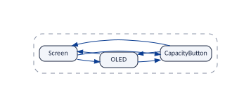
An atomic set is a group of features that behave as one. Find them and your model has fewer real decisions than it seems.
The minimal form: the graphs without repetitions
The complete graphs are exact, but they repeat themselves. MovementFilter points to BLEv40 and BLEv40 points to Screen; the arrow from MovementFilter to Screen adds nothing new. The figure shows in grey every arrow that follows from others.

vp_generate() writes the essential part of each graph in
a file of its own, and vp_minimal() computes it from any
model. Together with the atomic sets they are the minimal
form:
__requires_skeleton.net,
vp_skeleton()
|
The skeleton: the arrows that do not follow from a chain of other arrows (the transitive reduction of the graph Aho et al. (1972)). Each atomic set appears once, under the name of its representative. |
__excludes_primitive.net,
vp_primitive_conflicts()
|
The primitive conflicts: the conflicts that a feature has by itself, not because it requires something that has the conflict. |
__atleastone_primitive.net,
vp_primitive_atleastone()
|
The “at least one” edges that do not follow from others
(with or_graph = TRUE; here 1 of the 3). |
band_min <- vp_minimal(band)
band_min
#> variplex model "miband3_realized"
#> features: 9 variable (the nodes of the graphs), 8 core, 0 dead
#> requires: 6 arrows excludes: 3 lines
#> at least one: 1 lines
#> minimal form: skeleton, primitive conflicts and primitive at-least-one lines;
#> each atomic set is one node (1 sets)
vp_links(band_min, "requires")
#> # A tibble: 6 x 2
#> from to
#> <chr> <chr>
#> 1 TouchScreen Screen
#> 2 ContactlessPayment NFC
#> 3 MovementFilter BLEv40
#> 4 BLEv40 Screen
#> 5 BLEv42 Screen
#> 6 BLEv42 HeartRateSensor
vp_links(band_min, "excludes")
#> # A tibble: 3 x 2
#> from to
#> <chr> <chr>
#> 1 Screen BT40
#> 2 MovementFilter HeartRateSensor
#> 3 BLEv40 BLEv42From 21 arrows to 6, and from 10 conflicts to 3. The figure draws
them together (vp_plot(band_min) makes the same drawing),
and it is the clearest picture of the model: 3 conflicts and 6
dependencies explain everything.

How to read the minimal form
- Requires: follow the arrows upwards. MovementFilter reaches BLEv40 and then the box, so it requires BLEv40, Screen, OLED and CapacityButton.
- Excludes: a red line also applies to everything below its ends. BT40 conflicts with the box, so it conflicts with whatever points to the box: TouchScreen, BLEv40, BLEv42 and MovementFilter.
- At least one: a green line also applies to everything above its ends. If every band has A or B, and A requires C, then every band has C or B.
The figure puts the minimal form of the three graphs in one drawing.

Nothing is lost: vp_expand()
The minimal form is not an approximation. vp_expand()
rebuilds the complete graphs from it, and vp_read() reads
the minimal form that vp_generate() wrote:
written <- vp_read("out/miband3_realized", form = "minimal")
rebuilt <- vp_expand(written)
identical(rebuilt$requires, band$requires)
#> [1] TRUE
identical(rebuilt$excludes, band$excludes)
#> [1] TRUE
identical(rebuilt$atleastone, band$atleastone)
#> [1] TRUEKeep the minimal form to look at and to draw. Keep the complete graphs to compute with. They say the same.
For this small model the saving is modest. For the Linux kernel (version 3.13) the complete graphs have 145,685 links and the minimal form 11,981.
The kernel: “can these go together?”
The question
Suppose you make these bands. Customers, or your marketing department, come to you with wish lists:
- “a band with a touch screen, a heart-rate sensor and NFC”;
- “a band with a movement filter and Bluetooth 4.2”;
- “a band with a touch screen and classic Bluetooth”.
In the language of software product lines, a wish list is a partial configuration Czarnecki et al. (2005); Benavides et al. (2010): a configuration in which some features have been decided and the others are still open (a wish list decides only features that a product must have; a partial configuration can also say which ones it must not have). Which of them can be built? A wish list can be built when at least one valid configuration has all its features. The Mi Band 3 has 11 features that can vary, so there are 2,048 different wish lists, and only 520 of them can be built. Checking them one by one against the 24 valid configurations is tedious; for Linux, whose configurations cannot even be counted, it is impossible.
The graphs of the previous sections already hold the answer: a wish
list can be built exactly when no two of its features exclude each
other, directly or through what they bring along (with one limit, Limits and theory).
vp_can_go_together() checks it:
vp_can_go_together(
band,
list(
c("TouchScreen", "HeartRateSensor", "NFC"),
c("MovementFilter", "BLEv42"),
c("TouchScreen", "BT40")
)
)
#> # A tibble: 3 x 3
#> wish possible reasons
#> <chr> <lgl> <chr>
#> 1 TouchScreen, HeartRateSensor, NFC TRUE ""
#> 2 MovementFilter, BLEv42 FALSE "MovementFilter excludes BLEv42 (which brings HeartRat~
#> 3 TouchScreen, BT40 FALSE "TouchScreen (which brings Screen) excludes BT40"But the graphs hold much more than this question needs: for Linux 3.13, 7,100 configuration options and 145,685 links. The kernel is a much smaller map that keeps only what this one question needs. It adapts the co-installability kernels of software packages Vouillon and Di Cosmo (2013).
The kernel is a map made for one question: “can these features be in the same product?”. It keeps the features that can make the answer “no”, with the links between them, and puts all the other features into a single box.
How the kernel is made
Three simplifications turn the graphs into the kernel. Follow them on the figure, which paints every feature with the colour of the box it will end up in.
1. Features that always go together count as one. The 3 features of the atomic set (Screen, OLED and CapacityButton) are always selected together, so for any wish list they stand or fall together. They become one box, A (blue).
2. Features that can never cause trouble are set aside. A feature is trouble-free when it excludes no other feature, neither by itself nor through the features it brings along. NFC is trouble-free: it excludes nothing. ContactlessPayment brings NFC along, and excludes nothing either. Adding them to a wish list can never make it impossible, so for this question they can be forgotten. All the trouble-free features go into one single box, the class “can always be added”, C (green).
Having no red line of your own is not enough to be trouble-free. TouchScreen excludes nothing by itself, but it brings Screen along, and Screen excludes BT40: a band with a touch screen can never use classic Bluetooth. So TouchScreen can cause trouble, and it keeps a box of its own, B (orange). So do the other five features that can cause trouble, each with its own colour.
3. Between the boxes, only two kinds of line are kept: the arrows that say which box brings which along, and the red lines of the root conflicts, the primitive conflicts of the minimal form, from which every other conflict follows.
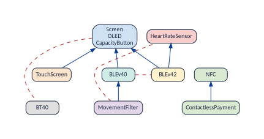
Each box is called a class. vp_kernel()
lists the classes and vp_kernel_links() the links between
them:
vp_kernel(band)
#> # A tibble: 11 x 4
#> class label feature trouble_free
#> <int> <chr> <chr> <lgl>
#> 1 1 Screen Screen FALSE
#> 2 1 Screen OLED FALSE
#> 3 1 Screen CapacityButton FALSE
#> 4 2 TouchScreen TouchScreen FALSE
#> 5 3 ContactlessPayment ContactlessPayment TRUE
#> 6 3 ContactlessPayment NFC TRUE
#> 7 4 MovementFilter MovementFilter FALSE
#> 8 5 HeartRateSensor HeartRateSensor FALSE
#> 9 6 BLEv40 BLEv40 FALSE
#> 10 7 BLEv42 BLEv42 FALSE
#> 11 8 BT40 BT40 FALSE
vp_kernel_links(band)
#> # A tibble: 9 x 3
#> from link to
#> <chr> <chr> <chr>
#> 1 TouchScreen requires Screen
#> 2 MovementFilter requires Screen
#> 3 MovementFilter requires BLEv40
#> 4 BLEv40 requires Screen
#> 5 BLEv42 requires Screen
#> 6 BLEv42 requires HeartRateSensor
#> 7 Screen excludes BT40
#> 8 MovementFilter excludes HeartRateSensor
#> 9 BLEv40 excludes BLEv42
The 11 features, 21 arrows and 10 conflicts of the graphs became 8 boxes, 6 arrows and 3 red lines. Three red lines are enough because every conflict of the band comes from one of three root conflicts: a screen against classic Bluetooth (A–H), the movement filter against the heart-rate sensor (D–E), and the two versions of BLE against each other (F–G). The arrows carry them to other features: D (MovementFilter) points to F (BLEv40), which conflicts with G (BLEv42), so the movement filter conflicts with BLEv42 too.
Reading the kernel
| What you see | Where it is | What it means |
|---|---|---|
| a box | a class of vp_kernel(); a line of
__kernel_classes.txt
|
one or more features that count as one when you ask “can these go together?” |
| the green box | the class with trouble_free
TRUE
|
features that can be added to any wish list |
| an arrow A → B | a requires row of
vp_kernel_links(); __kernel_requires.net
|
every product with A has B too: A brings B along, and with it the conflicts of B |
| a red line A — B | an excludes row of
vp_kernel_links(); __kernel_excludes.net
|
a root conflict: no product has A and B together |
And this is the whole recipe for the question:
To know whether a wish list can be built:
- replace each feature by its box, and forget the green box;
- add every box that your boxes point to (the arrows already include whatever a box brings along indirectly, so one step is enough);
- look at the red lines: if one of them joins two of your boxes, the wish list cannot be built, and that red line says why; if none does, it can.
Three wish lists
“A touch screen, a heart-rate sensor and NFC.” TouchScreen is in box B, HeartRateSensor in E, NFC in the green box C, which we forget. B points to A: a touch screen brings the screen along. The boxes are B, E and A, and no red line joins two of them. It can be built.
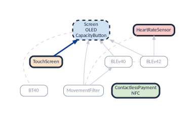
“A movement filter and Bluetooth 4.2.” D points to A and F; G points to A and E. Among D, G, A, F and E there are two red lines. D–E: the movement filter excludes the heart-rate sensor, which Bluetooth 4.2 needs. F–G: the movement filter needs BLE version 4.0, and a band has only one version. It cannot be built, for two reasons.
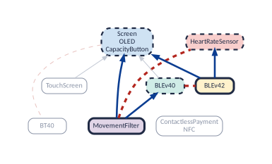
“A touch screen and classic Bluetooth.” B points to A, and a red line joins A and H. It cannot be built: a touch screen needs a screen, and a band with classic Bluetooth has none.
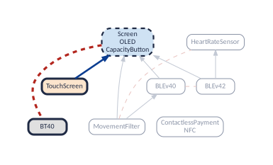
This recipe was checked against the 24 valid configurations of the band, for all 2,048 wish lists: the kernel gives the right answer every time (520 can be built, 1,528 cannot).
What the kernel is good for
- Answering “can these go together?” with a small map. A configurator, a sales tool or a planning spreadsheet can keep the kernel instead of the whole graphs and check any wish list in the three steps above. For the Mi Band the saving is small. For Linux 3.13 the kernel has 1,205 classes, 3,393 arrows and 578 red lines, instead of 7,100 options and 145,685 links.
- Knowing which features are free extras. The green class lists the features that can be offered with any product, whatever else is chosen. In Linux 3.13 it holds 5,733 of the 7,100 configuration options that can vary (81 %): only 1,367 options, in 1,204 classes, can ever make a selection impossible.
- Knowing where the trouble comes from. The red lines are the root conflicts, and the arrows show how they spread. In the Mi Band, 3 root conflicts explain all 10 conflicts of the excludes graph.
- Measuring how entangled a product line is, and what a change did to it. The planned version of the Mi Band 3 (Comparing versions) has only one cross-tree constraint. Its kernel has 4 classes, and its green class holds 8 features:
planned <- vp_generate(
vp_example("miband3_planned.uvl"),
or_graph = TRUE,
kernel = TRUE
)
vp_kernel(planned) |> filter(trouble_free)
#> # A tibble: 8 x 4
#> class label feature trouble_free
#> <int> <chr> <chr> <lgl>
#> 1 1 Screen Screen TRUE
#> 2 1 Screen OLED TRUE
#> 3 1 Screen CapacityButton TRUE
#> 4 1 Screen TouchScreen TRUE
#> 5 1 Screen ContactlessPayment TRUE
#> 6 1 Screen MovementFilter TRUE
#> 7 1 Screen HeartRateSensor TRUE
#> 8 1 Screen NFC TRUE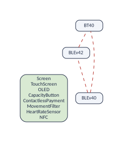
The four cross-tree constraints added in the realized band made 6 of these features able to cause trouble. A kernel that grows means features that interact more; a green class that shrinks means fewer free extras.
The three files
With kernel = TRUE, vp_generate() also
writes the kernel. The first file lists the classes, one per line; the
other two are graphs like those of the previous sections, but their dots
are the classes, not the features (vertex 1 is the first class, and so
on; each class is named after its first member):
show_file("kernel_classes.txt")
#> Screen OLED CapacityButton
#> TouchScreen
#> ContactlessPayment NFC
#> MovementFilter
#> HeartRateSensor
#> BLEv40
#> BLEv42
#> BT40
show_file("kernel_requires.net")
#> *Vertices 8
#> 1 "Screen"
#> 2 "TouchScreen"
#> 3 "ContactlessPayment"
#> 4 "MovementFilter"
#> 5 "HeartRateSensor"
#> 6 "BLEv40"
#> 7 "BLEv42"
#> 8 "BT40"
#> *Arcs
#> 2 1
#> 4 1
#> 4 6
#> 6 1
#> 7 1
#> 7 5
show_file("kernel_excludes.net")
#> *Vertices 8
#> 1 "Screen"
#> 2 "TouchScreen"
#> 3 "ContactlessPayment"
#> 4 "MovementFilter"
#> 5 "HeartRateSensor"
#> 6 "BLEv40"
#> 7 "BLEv42"
#> 8 "BT40"
#> *Edges
#> 1 8
#> 4 5
#> 6 7What the kernel is not
A class is not an atomic set. The members of an atomic set, like the 3 features of box A, are always selected together. The members of a class merely behave alike for this question: the two features of the green box share a class, yet a band can have NFC without ContactlessPayment.
Only rules about two features. The kernel, like the graphs, is built from relationships between two features, and a rule that ties three or more features at once is invisible to it. So a “no” of the kernel is always right, but a “yes” can be wrong. Limits and theory shows when, how often, and how to be sure.
The kernel also only deals with features that you want; what
follows from leaving a feature out is the business of the at-least-one
graph, which the kernel does not use
(vp_partial_configuration() and
vp_consequences() use it).
For the curious: the recipe of the program. It starts from the graph in which each atomic set is one node, and from the root conflicts. It deletes every arrow that points to a node that excludes nothing; gives each node the set of nodes it still requires, itself included if it excludes something; and merges the nodes that have the same set. The trouble-free nodes all get the empty set, which is why they end up in one class.
The two reports: what was decided, and how the run went
Every run writes two files that describe the run itself. A model read
by vp_read() or returned by vp_generate()
holds both: band$variables and
band$summary.
What was decided about each feature:
__variables.csv
This file has one line per variable of the formula. It opens in any spreadsheet, and in R it is a tibble:
print(band$variables, n = Inf)
#> # A tibble: 24 x 8
#> dimacs_var name output_name node_id class status decision rule
#> <int> <chr> <chr> <int> <chr> <chr> <chr> <chr>
#> 1 1 SmartWatch <NA> NA ABSTRACT core dropped U4
#> 2 2 Screen Screen 1 OPTION variable kept U5
#> 3 3 TouchScreen TouchScreen 2 OPTION variable kept U5
#> 4 4 OLED OLED 3 OPTION variable kept U5
#> 5 5 CapacityButton CapacityButton 4 OPTION variable kept U5
#> 6 6 Functionalities <NA> NA ABSTRACT core dropped U4
#> 7 7 FitnessMonitor FitnessMonitor NA OPTION core kept U5
#> 8 8 SleepTracker SleepTracker NA OPTION core kept U5
#> 9 9 VibrateAlert VibrateAlert NA OPTION core kept U5
#> 10 10 Call Call NA OPTION core kept U5
#> 11 11 Notification Notification NA OPTION core kept U5
#> 12 12 ContactlessPayment ContactlessPayment 5 OPTION variable kept U5
#> 13 13 Sensors <NA> NA ABSTRACT core dropped U4
#> 14 14 Pedometer Pedometer NA OPTION core kept U5
#> 15 15 MovementFilter MovementFilter 6 OPTION variable kept U5
#> 16 16 Accelerometer Accelerometer NA OPTION core kept U5
#> 17 17 HeartRateSensor HeartRateSensor 7 OPTION variable kept U5
#> 18 18 Connectivity <NA> NA ABSTRACT core dropped U4
#> 19 19 Bluetooth Bluetooth NA OPTION core kept U5
#> 20 20 BLE <NA> NA ABSTRACT variable dropped U4
#> 21 21 BLEv40 BLEv40 8 OPTION variable kept U5
#> 22 22 BLEv42 BLEv42 9 OPTION variable kept U5
#> 23 23 BT40 BT40 10 OPTION variable kept U5
#> 24 24 NFC NFC 11 OPTION variable kept U5| Column | Meaning |
|---|---|
dimacs_var |
The number of the variable in the formula. |
name |
Its name in the model. |
output_name |
Its name in the graphs and lists. In this model it is
always the same as name; the example below shows when it
differs. Empty if the variable is not kept. |
node_id |
Its number in the graphs. Empty if it is not a dot of the graphs: here, the core features and the abstract ones, which are dropped. |
class |
What it is. Here OPTION
(an ordinary feature; remember that the engine says option) or
ABSTRACT (an abstract feature, the root included). A root
that is not abstract is ROOT. |
status |
How it behaves: core,
dead or variable. |
decision |
What was done with it:
kept, dropped or merged_into:
another. Here the abstract features are dropped and all the others are
kept. |
rule |
Why: the name of the rule that
decided. Here U4 or U5: see the table
below. |
The rules of a UVL model. Each kind of formula has its own set of rules (Formulas made by other tools). For a formula translated from UVL by variplex itself there are five, and they are simple, because the translator marks in the formula, with special comments, which variable is the root, which features are abstract, and which variables are helpers that it added (Looking at the formula shows these comments):
| Rule | It applies to | class |
decision |
In the Mi Band 3 |
|---|---|---|---|---|
U1 |
a helper variable of the Tseitin transformation
(tseitin = TRUE), marked c aux N tseitin
|
TSEITIN |
dropped | none; 10 with tseitin = TRUE
|
U2 |
a helper variable that splits a long clause, marked
c aux N chain (written by older versions of the
translator) |
CHAIN |
dropped | none |
U3 |
the root of the feature tree, marked
c root N, if it is not abstract |
ROOT |
kept (it is core) | none: the root, SmartWatch, is abstract |
U4 |
a feature marked {abstract}, marked
c abstract N; the root too, if it is abstract |
ABSTRACT |
dropped (abstract = "keep" keeps them,
abstract = "merge" merges them) |
5: SmartWatch, Functionalities, Sensors, Connectivity, BLE |
U5 |
every other feature | OPTION |
kept | the other 19 |
So, in the report above, the abstract features, the root
SmartWatch among them, are dropped by U4, and
every other feature is kept by U5. With
tseitin = TRUE the formula also has helper variables, and
their rows say that U1 dropped them:
tseitin <- vp_generate(vp_example("miband3_realized.uvl"), tseitin = TRUE)
tseitin$variables |> filter(rule == "U1") |> head(3)
#> # A tibble: 3 x 8
#> dimacs_var name output_name node_id class status decision rule
#> <int> <chr> <chr> <int> <chr> <chr> <chr> <chr>
#> 1 25 <NA> <NA> NA TSEITIN variable dropped U1
#> 2 26 <NA> <NA> NA TSEITIN variable dropped U1
#> 3 27 <NA> <NA> NA TSEITIN core dropped U1An example of output_name. In a UVL
model, a feature keeps its name. Formulas made by other tools sometimes
write the names of the options with a prefix that is not part of the
name. KconfigSampler, for instance, puts the type of each option in
front of it: the option CONFIG_PLATFORM_WIN32 of the
library axTLS is the variable boolean_CONFIG_PLATFORM_WIN32
of its formula, and variplex shows it under its real name. Three rows of
the report of that formula (from the dataset of Strong4VM):
dimacs_var,name,output_name,node_id,class,status,decision,rule
2,boolean_CONFIG_PLATFORM_WIN32,CONFIG_PLATFORM_WIN32,1,OPTION,variable,kept,S2
10,int_CONFIG_X509_MAX_CA_CERTS_EQ_3,,,VALUE,variable,dropped,S5
14,ART_1,,,TSEITIN,variable,dropped,S1The first row is the option: name is the variable of the
formula, output_name the name in the graphs. The other two
are helper variables of the translation (the value 3 of a number option,
and a Tseitin variable), which are dropped, so their
output_name is empty.
For a UVL model this report is simple: every feature is kept but the
abstract ones. It becomes essential for formulas produced by other
tools, which are full of variables that are not features (Formulas made by other tools). There, this report
is where you check that variplex kept the right ones.
vp_classify() writes it without computing any graph, which
is fast even for Linux.
Try it
Is a feature missing from a graph? Look at its row. If
status is core or dead, it is in
the corresponding list instead. If decision is
dropped, the column rule tells which rule
dropped it.
A summary of the run: __summary.json
The second report is a JSON file, a format that people can read and programs can load. It records how the run was made and what it found; in R it is a list:
names(band$summary)
#> [1] "strong4vm_version" "command_line" "void" "options"
#> [5] "input" "counts" "kernel" "mig"
#> [9] "uvl" "checks" "warnings" "timings"
str(band$summary$counts)
#> List of 31
#> $ variables_by_class :List of 2
#> ..$ ABSTRACT: int 5
#> ..$ OPTION : int 19
#> $ by_rule :List of 2
#> ..$ U4:List of 3
#> .. ..$ kept : int 0
#> .. ..$ dropped: int 5
#> .. ..$ merged : int 0
#> ..$ U5:List of 3
#> .. ..$ kept : int 19
#> .. ..$ dropped: int 0
#> .. ..$ merged : int 0
#> $ formula_variables : int 24
#> $ fresh_variables : int 0
#> $ kept : int 19
#> $ dropped : int 5
#> $ merged : int 0
#> $ core : int 8
#> $ dead : int 0
#> $ variable_options : int 11
#> $ unconstrained : int 0
#> $ nodes : int 11
#> $ arcs : int 21
#> $ edges : int 10
#> $ atleastone_edges : int 3
#> $ atomic_sets : int 1
#> $ kernel_nodes : int 8
#> $ kernel_arcs : int 6
#> $ kernel_conflicts : int 3
#> $ skeleton_arcs : int 6
#> $ primitive_conflicts : int 3
#> $ primitive_atleastone : int 1
#> $ largest_atomic_set : int 3
#> $ tristate_merged_pairs : int 0
#> $ nonbool_merged_options : int 0
#> $ nonbool_without_not_set: list()
#> $ unknown_kept : int 0
#> $ queried_variables : int 11
#> $ solver_calls : int 5
#> $ solver_instances : int 1
#> $ threads_used : int 1-
input: the size of the formula and the translator profile, with how it was chosen (here, from the.uvlextension). -
uvl: facts about the UVL model: its features, how many are abstract, and how many constraints had to be skipped because they are not logical (none here). -
counts: the numbers of this vignette in one place: core, dead, nodes, arcs, edges, atomic sets, links of the minimal form, classes of the kernel, and calls to the solver (solver_calls, fewer than the questions when the MIG answers some of them alone: Where the time went). -
checks: whether the results passed the consistency checks of Is everything consistent?. -
warnings: everything the run warned about.
The summary also has every option with the value that was used, also
those you did not give, the command line that the options make
(command_line), and the time spent in each step. With it, a
result can always be traced back to how it was produced.
Where the time went: timings and mig
The times are in two places of the summary, in seconds. On the model
of the vignettes they are all close to zero, so here is a larger one,
the automotive product line automotive01 of the examples of
Strong4VM, run with four threads (threads = 4):
"timings": { "parse": 0.13, "classify": 0.02, "backbone": 0.34, "main_loop": 1.43, "atomic": 0.01,
"post_processing": 0.25, "write": 0.08, "checks": 0.10 },
"mig": { "jobs": 2513, "jobs_without_solver": 1690, "solver_calls": 1123,
"timings": { "build": 0.004, "setup": 0.05, "jobs": 1.37,
"graph_thread_seconds": 0.63, "filter_thread_seconds": 1.35, "solver_thread_seconds": 3.11 } }timings has one entry per step of the run, one after the
other: reading the model (parse), sorting its variables
(classify), finding the core and dead features
(backbone), asking about each feature that can vary
(main_loop), the atomic sets (atomic), the
minimal form and the kernel (post_processing), writing the
files (write) and the consistency checks
(checks). On large models the main loop is usually the
largest part; on a small model, or on a slow disk, writing the files can
take as long.
The main loop does not send every question to the solver. First it
looks at a modal implication graph (MIG): a cheap picture of
the clauses of the formula, from which many answers can be read without
a solver, and which tells which features a selection cannot affect. Only
what is left goes to the backbone solver. The graphs are the same with
and without it (mig = FALSE switches it off); only the time
changes. mig$timings splits the main loop into its
parts:
| Entry | What it measures |
|---|---|
build |
Creating the MIG, once, before the threads start |
setup |
Creating one solver per thread |
jobs |
The questions, from the first to the last: wall-clock
time, like the entries of timings
|
graph_thread_seconds |
Using the MIG: following its edges from the selected feature |
filter_thread_seconds |
Using the MIG: choosing what to ask, and ruling out answers with the products the solver already found |
solver_thread_seconds |
Calling the backbone solver |
The last three entries are thread time: the time of every
thread, added up. With four threads they can add up to about four times
jobs. Do not add them to the wall-clock entries; compare
them with one another. With quiet = FALSE, a run that used
the MIG ends with these numbers already put together, with their shares,
as the first run of Get started shows:
total run for the total, calling the backbone solver
for the solver (with before the main loop, which holds the core
and dead features), and create the MIG with propagation and
weak reach and candidates and witnesses for the MIG.
Checking and explaining
Two questions about the results need no solver: are they consistent, and where does a relationship come from?
Is everything consistent? vp_check()
vp_check(band)
#> # A tibble: 6 x 3
#> property holds violations
#> <chr> <lgl> <int>
#> 1 requires is complete: A -> B and B -> C give A -> C TRUE 0
#> 2 conflicts are inherited: A -> B and B excludes C give A excludes C TRUE 0
#> 3 no feature requires two features that exclude each other TRUE 0
#> 4 no pair both requires and excludes TRUE 0
#> 5 at-least-one is inherited upwards: A or B, and B -> C give A or C TRUE 0
#> 6 A excludes B and (B or C) give A -> C TRUE 0vp_check() verifies properties that any correct result
must have: if A requires B and B requires C, the arrow from A to C must
be there; a conflict of B must also be a conflict of everything that
requires B; no feature may require two features that exclude each other
(it would be dead). A run of vp_generate() already does
these checks before it ends (and stops with an error if one fails,
unless fail_on_check = FALSE). The function is useful for
graphs that come from somewhere else, or that someone may have
edited.
Why? vp_explain_conflict() and
vp_explain_requires()
The graphs say that two features are in conflict. The explanations say why. Explaining implicit relationships by what they come from has been studied for feature models Kowal et al. (2016); Ananieva et al. (2016); Duszynski et al. (2019); these functions do it with the graphs alone:
vp_explain_conflict(band, "MovementFilter", "BT40")
#> # A tibble: 3 x 5
#> origin step from link to
#> <int> <int> <chr> <chr> <chr>
#> 1 1 1 MovementFilter requires BLEv40
#> 2 1 2 BLEv40 requires Screen
#> 3 1 3 Screen excludes BT40Read it like this: the conflict between MovementFilter and BT40 is inherited. Its origin is the primitive conflict between Screen and BT40, and MovementFilter gets it through the chain MovementFilter → BLEv40 → Screen. The figure highlights that path.
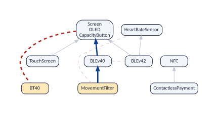
If the conflict is one of the primitive ones, there is nothing behind it:
vp_explain_conflict(band, "Screen", "BT40")
#> # A tibble: 1 x 5
#> origin step from link to
#> <int> <int> <chr> <chr> <chr>
#> 1 1 1 Screen excludes BT40The same works for a dependency:
vp_explain_requires(band, "MovementFilter", "Screen")
#> # A tibble: 4 x 5
#> route step from link to
#> <int> <int> <chr> <chr> <chr>
#> 1 1 1 MovementFilter requires BLEv40
#> 2 1 2 BLEv40 requires Screen
#> 3 2 1 MovementFilter excludes BT40
#> 4 2 2 BT40 atleastone ScreenThe second route appears because this model has the at-least-one graph: MovementFilter excludes BT40, and every band has BT40 or a screen, so a band with the movement filter has a screen. Two different reasons for the same fact. And if the relationship does not hold, you are told so:
vp_explain_requires(band, "TouchScreen", "HeartRateSensor")
#> "TouchScreen" does not require "HeartRateSensor": some valid product has TouchScreen without HeartRateSensor.
#> # A tibble: 0 x 5
#> # i 5 variables: route <int>, step <int>, from <chr>, link <chr>, to <chr>Comparing versions
Models change. A new version adds features and constraints, and the question is what that did to the relationships Thüm et al. (2009); Acher et al. (2012). This section compares two versions of the same band, as planned and as built, and then a whole chain of versions: seven generations of the Mi Band. The vignette Following a model through time goes much further.
Two versions: the band as planned and as built
The examples also have miband3_planned.uvl: the Mi Band
3 as it was planned. It has the same 24 features, but only 1 of
the 5 cross-tree constraints. The realized model, our example,
adds these 4:
constraints <- function(file) {
l <- trimws(readLines(file))
l[(which(l == "constraints") + 1):length(l)]
}
setdiff(
constraints(vp_example("miband3_realized.uvl")),
constraints(vp_example("miband3_planned.uvl"))
)
#> [1] "MovementFilter => !HeartRateSensor & BLEv40" "BLE => HeartRateSensor | MovementFilter"
#> [3] "!Screen => BT40" "BT40 => !Screen"The planned band (computed in the kernel above) has only 10 dependencies and 3 conflicts:
planned
#> variplex model "miband3_planned"
#> features: 11 variable (the nodes of the graphs), 8 core, 0 dead
#> requires: 10 arrows excludes: 3 lines
#> at least one: 0 lines
#> atomic sets: 1 (of two or more features)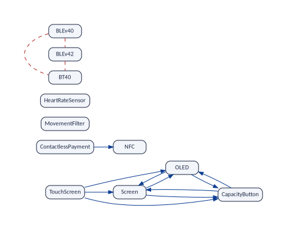
Now compare the two. vp_compare() takes the old version
and the new one, and gives one row per graph:
vp_compare(planned, band)
#> # A tibble: 3 x 10
#> graph kept added removed old_links new_links gained lost jaccard spearman
#> <chr> <int> <int> <int> <int> <int> <int> <int> <dbl> <dbl>
#> 1 requires 11 0 0 10 21 11 0 0.476 0.867
#> 2 excludes 11 0 0 3 10 7 0 0.3 NA
#> 3 atleastone 11 0 0 0 3 3 0 0 NA-
kept,added,removed: the comparison is about the features that can vary, and both versions have the same -
requires: 11 dependencies were gained and none was lost. The four new cross-tree constraints created 11 “requires” relationships. -
excludes: 7 conflicts were gained. -
atleastone: 3 “at least one” edges were gained. This row appears because both versions have the at-least-one graph. -
jaccardandspearmanmeasure how much stayed the same: see below.
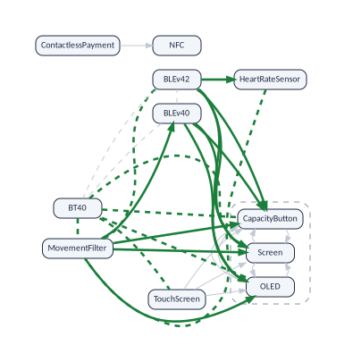
The two measures. jaccard is the links
in both versions divided by the links in either: 1 when the graph did
not change, 0 when nothing of it is left. With the numbers of the
dependencies: the planned band has 10 and the realized one 21. None was
lost, so all 10 of the planned band are in both, and 11 were gained:
10/21 = 0.47619. For the conflicts it is 3/10 = 0.30, and for the “at
least one” edges 0/3 = 0.00. spearman sorts the kept
features by how many features require them, in each version, and
compares the two orders: 1 for the same order. A Spearman of 0.87 says
that the features that the others depend on most are almost the same in
both versions: the new constraints added links, but did not move the
centre of the model.
vp_changed_links() lists the links that changed, and
vp_state_moves() the features that moved between core, dead
and variable (none here):
vp_changed_links(planned, band, "requires")
#> # A tibble: 11 x 3
#> from to change
#> <chr> <chr> <chr>
#> 1 MovementFilter Screen gained
#> 2 MovementFilter OLED gained
#> 3 MovementFilter CapacityButton gained
#> 4 MovementFilter BLEv40 gained
#> 5 BLEv40 Screen gained
#> 6 BLEv40 OLED gained
#> 7 BLEv40 CapacityButton gained
#> 8 BLEv42 Screen gained
#> 9 BLEv42 OLED gained
#> 10 BLEv42 CapacityButton gained
#> 11 BLEv42 HeartRateSensor gained
vp_state_moves(planned, band)
#> # A tibble: 0 x 3
#> # i 3 variables: feature <chr>, before <chr>, after <chr>Four cross-tree constraints, 11 new dependencies and 7 new conflicts. A comparison of the graphs measures the real effect of a change, which is rarely the size of the change.
A feature that changed its name
Versions are compared by the names of the features. Suppose that in
the planned band the first version of Bluetooth Low Energy was called
BLEv40Old (the example miband3_planned_old.uvl).
Compared as they are, the two versions look as if one feature had been
removed and another added, and since links are compared only among the
features of both versions, the links of that feature drop out of the
comparison (7 dependencies gained instead of 11):
planned_old <- vp_generate(
vp_example("miband3_planned_old.uvl"),
or_graph = TRUE
)
vp_compare(planned_old, band) |>
select(graph, kept, added, removed, gained, lost)
#> # A tibble: 3 x 6
#> graph kept added removed gained lost
#> <chr> <int> <int> <int> <int> <int>
#> 1 requires 10 1 1 7 0
#> 2 excludes 10 1 1 7 0
#> 3 atleastone 10 1 1 3 0vp_rename() gives the features of the old version their
new names first: from a named vector, or from a file with one rename per
line, the old name, a space, and the new name (a tab
instead of the space if a name has spaces of its own; lines that start
with # and empty lines are ignored). With it, the
comparison is the one above:
vp_compare(vp_rename(planned_old, c(BLEv40Old = "BLEv40")), band) |>
select(graph, kept, added, removed, gained, lost)
#> # A tibble: 3 x 6
#> graph kept added removed gained lost
#> <chr> <int> <int> <int> <int> <int>
#> 1 requires 11 0 0 11 0
#> 2 excludes 11 0 0 7 0
#> 3 atleastone 11 0 0 3 0
cat(readLines(vp_example("miband3_renames.txt")), sep = "\n")
#> # one rename per line: the old name, a space (a tab if a name has spaces), the new name
#> BLEv40Old BLEv40
vp_compare(vp_rename(planned_old, vp_example("miband3_renames.txt")), band) |>
select(graph, kept, gained, lost)
#> # A tibble: 3 x 4
#> graph kept gained lost
#> <chr> <int> <int> <int>
#> 1 requires 11 11 0
#> 2 excludes 11 7 0
#> 3 atleastone 11 3 0A rename whose old name is not a feature of the model changes
nothing, so vp_rename() warns about it.
vp_rename_candidates() finds the likely renames by
comparing the links of the features that disappeared and appeared.
Many versions: seven generations of the band
A product line lives for years, and each new product is a new version
of its model Lotufo et al. (2010); Kuiter et al. (2026). The examples have the
realized model of 7 generations of the band: the Mi Band 1, 1s, 2, 3, 4,
6 and 8 (there is no realized model of the Mi Band 5 or 7).
vp_history() runs every version and gathers the models,
oldest first:
gens <- c(
"miband1",
"miband1s",
"miband2",
"miband3",
"miband4",
"miband6",
"miband8"
)
history <- vp_history(
vp_example(paste0(gens, "_realized.uvl")),
versions = gens,
or_graph = TRUE
)
history
#> # A tibble: 7 x 2
#> version model
#> <fct> <list>
#> 1 miband1 <vp_model>
#> 2 miband1s <vp_model>
#> 3 miband2 <vp_model>
#> 4 miband3 <vp_model>
#> 5 miband4 <vp_model>
#> 6 miband6 <vp_model>
#> 7 miband8 <vp_model>
vp_history_sizes(history) |>
select(version, features, core, requires, excludes, atleastone)
#> # A tibble: 7 x 6
#> version features core requires excludes atleastone
#> <fct> <int> <int> <int> <int> <int>
#> 1 miband1 0 8 0 0 0
#> 2 miband1s 1 8 0 0 0
#> 3 miband2 8 8 6 3 0
#> 4 miband3 11 8 21 10 3
#> 5 miband4 17 8 32 35 1
#> 6 miband6 21 8 108 72 1
#> 7 miband8 23 8 127 93 1- The first band offers no choice at all: its 8 features are all core (and its 4 abstract features are left out). There is exactly one product, and nothing to draw.
- Every generation adds features that can vary: 0 in the Mi Band 1, 23 in the Mi Band 8. The number of core features stays at 8.
- The relationships grow much faster than the constraints. The Mi Band 8 has 22 cross-tree constraints, and variplex finds 127 dependencies and 93 conflicts among its 23 features that can vary: the lesson of the requires graph, once more.
vp_history_changes() compares each version with the one
before:
vp_history_changes(history) |>
filter(graph == "requires") |>
select(from, to, kept, added, removed, gained, lost, jaccard, spearman)
#> # A tibble: 6 x 9
#> from to kept added removed gained lost jaccard spearman
#> <fct> <fct> <int> <int> <int> <int> <int> <dbl> <dbl>
#> 1 miband1 miband1s 0 1 0 0 0 1 NA
#> 2 miband1s miband2 1 7 0 0 0 1 NA
#> 3 miband2 miband3 8 3 0 11 0 0.353 0.894
#> 4 miband3 miband4 11 6 0 11 10 0.344 0.297
#> 5 miband4 miband6 17 4 0 45 4 0.364 0.302
#> 6 miband6 miband8 21 2 0 9 8 0.855 0.864What is compared
The comparison is about the features that can vary in both
versions: the kept features. In the first step, from
the Mi Band 1 to the Mi Band 1s, none is kept, because the Mi Band 1 has
no feature that can vary. Core features are not vertices of the graphs,
so they are not counted as kept, even when both versions have them;
vp_state_moves() follows them instead. The step from the Mi
Band 1s to the Mi Band 2:
vp_state_moves(history$model[[2]], history$model[[3]])
#> # A tibble: 8 x 3
#> feature before after
#> <chr> <chr> <chr>
#> 1 BT40 core variable
#> 2 Screen absent variable
#> 3 OLED absent variable
#> 4 CapacityButton absent variable
#> 5 MovementFilter absent variable
#> 6 BLEv40 absent variable
#> 7 BLEv42 absent variable
#> 8 Bluetooth absent coreThe rows whose state before is absent are the new
features. The row of BT40 is a move: classic Bluetooth
was core in the Mi Band 1s (every band had it) and can vary in the Mi
Band 2, where a band has either classic Bluetooth or BLE. The new
feature Bluetooth is core: every band has one of the two.
The relationships are compared only among the kept features. A link that touches a new feature is not counted as gained: it could not exist before. So the step from the Mi Band 1s to the Mi Band 2 has nothing to compare: with only 1 kept feature, there is no link to compare, and its Jaccard of 1 is a convention, not “no change”. Always look at the number of kept features first.
A redesign: the Mi Band 3 to the Mi Band 4
m3 <- history$model[[4]]
m4 <- history$model[[5]]
vp_compare(m3, m4) |>
select(graph, kept, added, gained, lost, jaccard, spearman)
#> # A tibble: 3 x 7
#> graph kept added gained lost jaccard spearman
#> <chr> <int> <int> <int> <int> <dbl> <dbl>
#> 1 requires 11 6 11 10 0.344 0.297
#> 2 excludes 11 6 8 0 0.556 NA
#> 3 atleastone 11 6 0 2 0.333 NAThe two versions share 11 features that can vary. Among them, the Mi Band 3 has 21 dependencies and the Mi Band 4 has 22: 11 are in both, 10 were lost and 11 were gained. Notice that 21 and 22 are almost the same number: counting links would say that nothing happened. Jaccard says that more than half of the links are different. The figure draws the three groups on the shared features.
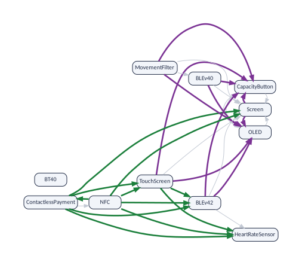
The lost arrows tell one story: every one of them points to OLED or to CapacityButton. In the Mi Band 3, a band with a screen has an OLED screen with a capacity button. The Mi Band 4 brings a second kind of screen, AMOLED: a screen no longer means OLED.
vp_changed_links(m3, m4, "requires") |> filter(change == "lost")
#> # A tibble: 10 x 3
#> from to change
#> <chr> <chr> <chr>
#> 1 Screen OLED lost
#> 2 Screen CapacityButton lost
#> 3 TouchScreen OLED lost
#> 4 TouchScreen CapacityButton lost
#> 5 MovementFilter OLED lost
#> 6 MovementFilter CapacityButton lost
#> 7 BLEv40 OLED lost
#> 8 BLEv40 CapacityButton lost
#> 9 BLEv42 OLED lost
#> 10 BLEv42 CapacityButton lostThe explanations, asked on each version, confirm it, and they explain one of the gained arrows too:
vp_explain_requires(m3, "Screen", "OLED")
#> # A tibble: 3 x 5
#> route step from link to
#> <int> <int> <chr> <chr> <chr>
#> 1 1 1 Screen requires OLED
#> 2 2 1 Screen excludes BT40
#> 3 2 2 BT40 atleastone OLED
vp_explain_requires(m4, "TouchScreen", "HeartRateSensor")
#> # A tibble: 2 x 5
#> route step from link to
#> <int> <int> <chr> <chr> <chr>
#> 1 1 1 TouchScreen requires BLEv42
#> 2 1 2 BLEv42 requires HeartRateSensorIn the Mi Band 3 a touch screen did not need a heart-rate sensor (Why? asked the same question). In the Mi Band 4
it does: one of the new constraints,
TouchScreen => BLEv42, met an old relationship,
BLEv42 requires HeartRateSensor. Nobody wrote “a touch
screen needs a heart-rate sensor”; the comparison found it.
Reading a history, step by step
- Kept, added, removed. With fewer than two kept features, the Jaccard numbers mean nothing yet.
- Jaccard of each graph. Near 1: the relationships among the features you already had stayed as they were. Low: they changed.
- Gained and lost. Only gains: the version added rules, and the design got tighter. Losses: something that used to be forced is now a choice.
-
The names.
vp_changed_links()lists every link that changed,vp_state_moves()the new features and the moves. Ask for explanations on both versions for the reasons. - Spearman. Low: the features that everything else depends on are not the same as before.
Using the results in other programs
The graphs are in Pajek format, read by the usual programs for
network analysis: Gephi and Pajek (to explore and draw), and the library
igraph (to compute; it exists for R, Python and C). The reports are CSV
and JSON, read by everything. In R, vp_igraph() gives any
graph of a model as an igraph object:
g <- vp_igraph(band, "requires")
sort(igraph::degree(g, mode = "in"), decreasing = TRUE)
#> Screen OLED CapacityButton HeartRateSensor BLEv40
#> 6 6 6 1 1
#> NFC TouchScreen ContactlessPayment MovementFilter BLEv42
#> 1 0 0 0 0
#> BT40
#> 0Counting the arrows that point to a feature tells how many features a change to it can affect, its impact set Abate et al. (2009); measures of this kind, over the whole dataset, are studied in Sánchez et al. (2026). The same, in Python, from the files:
import igraph as ig
g = ig.Graph.Read_Pajek("out/miband3_realized__requires.net")
print(sorted(zip(g.indegree(), g.vs["id"]), reverse=True)[:3])Pajek has no way to write a double quote inside a name:
vp_generate() writes it with a backslash before it, and
igraph does not understand that backslash (vp_read() does).
No feature of the Mi Band has a double quote in its name; if one of
yours does, rename it before you use igraph on the files.
The options of vp_generate()
?vp_generate lists every argument with its default
value. The ones you are likely to use:
| Argument | What it does |
|---|---|
output_dir |
Writes the files in that folder instead of a temporary one. |
threads |
Uses that many threads. For large models this is the difference between minutes and hours. The results are the same with any number. |
quiet = FALSE |
Prints what the run does. |
or_graph = TRUE |
Adds the at-least-one graph (The at-least-one graph). |
kernel = TRUE |
Adds the kernel (The kernel). |
representativeness = TRUE |
Counts, with the model counter GANAK, how many of the products that the graphs let pass are real ones (Measuring your own model). |
keep_dimacs = TRUE |
Keeps the logic formula made from the UVL model. |
tseitin = TRUE |
Uses another way of translating the constraints (the Tseitin transformation), better for very complicated constraints. |
fixed_nodes = "keep" |
Draws the core and dead features in the graphs too. |
abstract = "keep" |
Keeps the abstract features, the root included, which are left out by default. |
abstract = "merge" |
Merges each abstract feature into a feature that is not abstract and is selected in exactly the same products, if there is one. |
legacy = TRUE |
Behaves like version 1 of Strong4VM. |
read = FALSE |
Returns the prefix of the files, without reading them. |
vp_classify() only writes the two reports, without
computing graphs.
Looking at the formula: keep_dimacs
With keep_dimacs = TRUE (as in the run at the top of
this vignette), vp_generate() keeps the logic formula, in a
format called DIMACS:
writeLines(readLines("out/miband3_realized.dimacs"))
#> c generated-by uvl2dimacs 2.0 mode=straightforward
#> c Original features: 24
#> c Auxiliary variables: 0
#> c Total variables: 24
#> p cnf 24 47
#> c 1 SmartWatch
#> c 2 Screen
#> c 3 TouchScreen
#> c 4 OLED
#> c 5 CapacityButton
#> c 6 Functionalities
#> c 7 FitnessMonitor
#> c 8 SleepTracker
#> c 9 VibrateAlert
#> c 10 Call
#> c 11 Notification
#> c 12 ContactlessPayment
#> c 13 Sensors
#> c 14 Pedometer
#> c 15 MovementFilter
#> c 16 Accelerometer
#> c 17 HeartRateSensor
#> c 18 Connectivity
#> c 19 Bluetooth
#> c 20 BLE
#> c 21 BLEv40
#> c 22 BLEv42
#> c 23 BT40
#> c 24 NFC
#> c root 1
#> c abstract 1
#> c abstract 6
#> c abstract 13
#> c abstract 18
#> c abstract 20
#> 1 0
#> -2 1 0
#> -1 6 0
#> -6 1 0
#> -1 13 0
#> -13 1 0
#> -1 18 0
#> -18 1 0
#> -3 2 0
#> -2 4 0
#> -4 2 0
#> -4 5 0
#> -5 4 0
#> -6 7 0
#> -7 6 0
#> -6 8 0
#> -8 6 0
#> -6 9 0
#> -9 6 0
#> -12 6 0
#> -9 10 0
#> -10 9 0
#> -9 11 0
#> -11 9 0
#> -13 14 0
#> -14 13 0
#> -13 16 0
#> -16 13 0
#> -17 13 0
#> -15 14 0
#> -18 19 0
#> -19 18 0
#> -24 18 0
#> -19 20 23 0
#> -20 -23 0
#> -20 19 0
#> -23 19 0
#> -20 21 22 0
#> -21 -22 0
#> -21 20 0
#> -22 20 0
#> -15 -17 0
#> -15 21 0
#> -20 17 15 0
#> -12 24 0
#> 2 23 0
#> -23 -2 0The lines that start with c are comments. Most of them
give each feature a number; the last ones mark the root and the abstract
features. The line p cnf 24 47 announces 24 variables and
47 clauses. Each of the other lines is one clause: a list of numbers
ending in 0, of which at least one must hold. A positive number means
“the feature is selected” and a negative one “it is not”. The clause
-3 2 0 reads “not TouchScreen, or Screen”: a band with a
touch screen has a screen.
With tseitin = TRUE the formula is built differently Kuiter et al. (2022): it gets 10 helper
variables (34 in all) and 73 clauses. The graphs are exactly the same;
variplex knows that the helpers are not features and leaves them
out:
identical(tseitin$requires, band$requires)
#> [1] TRUEShowing core features and abstract ones
With fixed_nodes = "keep" the graphs also show the core
features, 19 features in all. The core ones are isolated dots, and their
number in the list is no longer 0:
fixed <- vp_generate(
vp_example("miband3_realized.uvl"),
fixed_nodes = "keep",
read = FALSE
)
head(readLines(paste0(fixed, "__core.txt")), 4)
#> [1] "5 \"FitnessMonitor\"" "6 \"SleepTracker\"" "7 \"VibrateAlert\"" "8 \"Call\""Abstract features are not parts of a band, so variplex leaves them
out. With abstract = "keep" they are kept, the root too:
the graphs have 12 features instead of 11 (BLE is abstract and
can vary) and the core list has 12 instead of 8. The report shows the
decisions:
keep <- vp_generate(vp_example("miband3_realized.uvl"), abstract = "keep")
keep$variables |>
filter(class == "ABSTRACT") |>
select(name, output_name, status, decision, rule)
#> # A tibble: 5 x 5
#> name output_name status decision rule
#> <chr> <chr> <chr> <chr> <chr>
#> 1 SmartWatch SmartWatch core kept U4
#> 2 Functionalities Functionalities core kept U4
#> 3 Sensors Sensors core kept U4
#> 4 Connectivity Connectivity core kept U4
#> 5 BLE BLE variable kept U4With abstract = "merge" an abstract feature is merged
into a feature that is not abstract and is selected in exactly the same
bands, if there is one, the way the features of an atomic set are
grouped. In this band BLE goes with the screen (the bands with a screen
are those with BLE), so it joins the atomic set of Screen; the
root and the headings that are in every band, 4 features, join a core
feature:
merge <- vp_generate(vp_example("miband3_realized.uvl"), abstract = "merge")
merge$variables |> filter(class == "ABSTRACT") |> select(name, status, decision)
#> # A tibble: 5 x 3
#> name status decision
#> <chr> <chr> <chr>
#> 1 SmartWatch core merged_into:FitnessMonitor
#> 2 Functionalities core merged_into:FitnessMonitor
#> 3 Sensors core merged_into:FitnessMonitor
#> 4 Connectivity core merged_into:FitnessMonitor
#> 5 BLE variable merged_into:ScreenThe graphs have 11 features, and nothing is lost: every relationship
of BLE is a relationship of Screen. In the planned band no
feature goes with BLE, which stands there for the choice “BLEv40 or
BLEv42” (Why BLEv40 and BLEv42 are not joined),
and abstract = "merge" keeps it. To compare versions, keep
the default: with "merge", a feature can appear or
disappear from one version to the next only because it became, or
stopped being, equivalent to another.
Compatibility with version 1: legacy
Version 1 of Strong4VM wrote four files and treated every variable as
a feature. legacy = TRUE reproduces it, for those who need
to compare with old results. The graphs then have all 24 features, core
ones included, and there is no minimal form:
legacy <- vp_generate(
vp_example("miband3_realized.uvl"),
legacy = TRUE,
read = FALSE
)
#> Warning: 24 variables matched no rule of profile 'generic' and were kept (--unknown-names keep),
#> e.g. SmartWatch, Screen, TouchScreen, OLED, CapacityButton, Functionalities, FitnessMonitor,
#> SleepTracker, VibrateAlert, Call
list.files(dirname(legacy))
#> [1] "miband3_realized__core.txt" "miband3_realized__dead.txt"
#> [3] "miband3_realized__excludes.net" "miband3_realized__requires.net"
#> [5] "miband3_realized__summary.json" "miband3_realized__variables.csv"The warning is version 1 speaking: it had no rules to tell features from other variables, so it kept them all.
Formulas made by other tools
variplex also reads the logic formula of a variability model written
in any other language, in DIMACS format, in files ending in
.dimacs or .cnf. The translation into a
formula is done beforehand by a tool that knows the language: KMax,
KConfigReader or KconfigSampler for the Kconfig files of Linux, BusyBox
or axTLS, TraVarT for feature models of other notations, and so on.
Then, for instance:
linux <- vp_generate("linux.dimacs", threads = 8, or_graph = TRUE)Such formulas contain many variables that are not features:
helpers that the translator invented, encodings of numbers and texts,
and so on. In the formula of Linux 3.13 made by KMax, 14,421 of the
23,838 variables are not configuration options. variplex recognises them
by rules that depend on the translator, keeps only the real options, and
writes its decision for every variable in __variables.csv,
with the rule that decided (The two reports
shows the rules of a UVL model, and a row of a formula made by
KconfigSampler). The translator is detected from the comments of the
formula; the argument translator names it if needed, and
the arguments tristate, nonbool,
visibility, abstract_groups,
synthetic_root, unnamed,
unknown_names, decls,
keep_pattern, drop_pattern and
drop_names adjust the rules (?vp_generate).
Try them with vp_classify(), which classifies the variables
in seconds, before a long run:
vp_classify(vp_example("eleven_options.dimacs"), translator = "kmax")
#> # A tibble: 11 x 8
#> dimacs_var name output_name node_id class status decision rule
#> <int> <chr> <chr> <lgl> <chr> <lgl> <chr> <chr>
#> 1 1 ACPI ACPI NA OPTION NA kept K6
#> 2 2 IA64 IA64 NA OPTION NA kept K6
#> 3 3 ACPI_INTERPRETER ACPI_INTERPRETER NA OPTION NA kept K6
#> 4 4 ACPI_NUMA ACPI_NUMA NA OPTION NA kept K6
#> 5 5 IA64_GENERIC IA64_GENERIC NA OPTION NA kept K6
#> 6 6 NUMA NUMA NA OPTION NA kept K6
#> 7 7 IA64_DIG IA64_DIG NA OPTION NA kept K6
#> 8 8 IA64_HP_ZX1 IA64_HP_ZX1 NA OPTION NA kept K6
#> 9 9 X86 X86 NA OPTION NA kept K6
#> 10 10 X86_PC X86_PC NA OPTION NA kept K6
#> 11 11 IA64_SGI_SN2 IA64_SGI_SN2 NA OPTION NA kept K6When something is wrong
A dead feature
Let us break the model on purpose. The example
miband3_dead.uvl is a copy of the Mi Band 3 with one more
constraint: NFC => !ContactlessPayment (“a band with NFC
has no contactless payment”). But constraint 3 says that contactless
payment needs NFC.
dead <- vp_generate(vp_example("miband3_dead.uvl"))
dead
#> variplex model "miband3_dead"
#> features: 10 variable (the nodes of the graphs), 8 core, 1 dead
#> requires: 20 arrows excludes: 10 lines
#> at least one: not computed (use vp_generate(or_graph = TRUE))
#> atomic sets: 1 (of two or more features)
vp_features(dead) |> filter(status == "dead")
#> # A tibble: 1 x 2
#> feature status
#> <chr> <chr>
#> 1 ContactlessPayment deadNo error: the model is still valid. But ContactlessPayment is now dead. It can never be selected, because selecting it would need NFC and forbid NFC at once. A dead feature is a feature that exists on paper only; the list of dead features is the first thing to look at after changing a model.
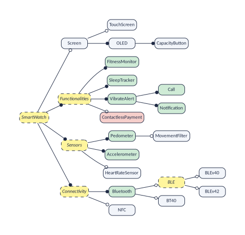
A model without any product
Now a worse mistake: a constraint that demands
BT40 & Screen, while constraint 5 forbids it.
void <- tryCatch(
vp_generate(vp_example("miband3_void.uvl")),
error = function(e) e
)
class(void)
#> [1] "variplex_void_model" "variplex_error" "error" "condition"
conditionMessage(void)
#> [1] "the formula 'miband3_void.dimacs' is unsatisfiable (void model): no configuration exists, so no graphs were written. Look for contradictory constraints in the model; the summary miband3_void__summary.json records \"void\": true.\n The model has no valid configuration: every feature is dead."The model is void: no configuration satisfies all
the constraints, so the product line has no product. There are no
configurations, so there is nothing to say about pairs of features, and
no graphs are written; only the summary is, with
"void": true.
Errors and their classes
Every error of vp_generate() has the class
variplex_error and a more precise one, so that a program
can react to each kind; the field exit_code is the exit
code that the command line of Strong4VM gives for the same problem:
| Class | exit_code |
Meaning |
|---|---|---|
variplex_usage |
1 | An argument has a value that is not accepted. |
variplex_input |
2 | The input is wrong: it is not a valid model or formula. |
variplex_void_model |
3 | The model is void: it has no valid configuration. |
variplex_solver |
4 | The solver failed. |
variplex_unknown_name |
5 | A name was not recognised (only with
unknown_names = "error"). |
variplex_strict_uvl |
6 | A constraint could not be translated (only with
strict_uvl = TRUE). |
variplex_check_failed |
7 | A consistency check failed. |
A value that an argument does not accept is answered with what was expected:
vp_generate(vp_example("miband3_realized.uvl"), tristate = "sometimes")
#> Error in `match.arg()`:
#> ! 'arg' should be one of "merge", "builtin", "both"References
P. Abate, J. Boender, R. Di Cosmo, S. Zacchiroli. Strong dependencies between software components. In ESEM, 2009. Extended version: arXiv:0905.4226.
M. Acher, P. Heymans, P. Collet, C. Quinton, P. Lahire, P. Merle. Feature model differences. In CAiSE, LNCS 7328, 2012.
A. V. Aho, M. R. Garey, J. D. Ullman. The transitive reduction of a directed graph. SIAM Journal on Computing 1(2):131–137, 1972.
S. Ananieva, M. Kowal, T. Thüm, I. Schaefer. Implicit constraints in partial feature models. In FOSD, pp. 18–27, 2016.
D. Benavides, S. Segura, A. Ruiz-Cortés. Automated analysis of feature models 20 years later: A literature review. Information Systems 35(6):615–636, 2010.
K. Czarnecki, S. Helsen, U. Eisenecker. Staged configuration through specialization and multilevel configuration of feature models. Software Process: Improvement and Practice 10(2):143–169, 2005.
S. Duszynski, S. J. Dhar, T. Beichter. Using relation graphs for improved understanding of feature models in software product lines. In SPLC, vol. A, 2019.
T. Heß, A. Molt. Improving deterministic BDD compilation with counting-free computation of atomic sets. In SPLC, 2025. doi:10.1145/3748269.3748491.
M. Kowal, S. Ananieva, T. Thüm. Explaining anomalies in feature models. In GPCE, 2016.
E. Kuiter, C. Sundermann, T. Thüm, T. Heß, S. Krieter, G. Saake. How configurable is the Linux kernel? Analyzing two decades of feature-model history. ACM TOSEM 35(1), 2026. doi:10.1145/3729423.
E. Kuiter, S. Krieter, C. Sundermann, T. Thüm, G. Saake. Tseitin or not Tseitin? The impact of CNF transformations on feature-model analyses. In ASE, 2022.
R. Lotufo, S. She, T. Berger, K. Czarnecki, A. Wąsowski. Evolution of the Linux kernel variability model. In SPLC, LNCS 6287, pp. 136–150, 2010.
J. M. Sanchez, M. A. Olivero,
R. Heradio, L. Cambelo, D. Fernandez-Amoros. Reasoning About Variability
Models Through Network Analysis. Manuscript
(papers/variability); arXiv:2603.16577, 2026.
T. Thüm, D. Batory, C. Kästner. Reasoning about edits to feature models. In ICSE, pp. 254–264, 2009.
P. Trinidad, D. Benavides, A. Durán, A. Ruiz-Cortés, M. Toro. Automated error analysis for the agilization of feature modeling. Journal of Systems and Software 81(6):883–896, 2008.
J. Vouillon, R. Di Cosmo. On software component co-installability. ACM TOSEM 22(4), 2013. doi:10.1145/2522920.2522927.